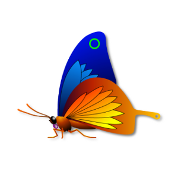
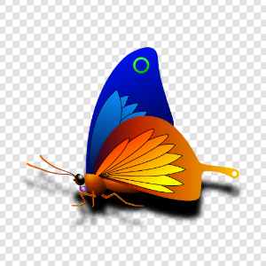
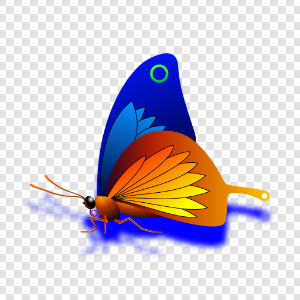
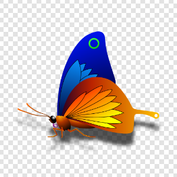
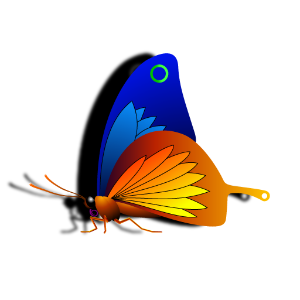
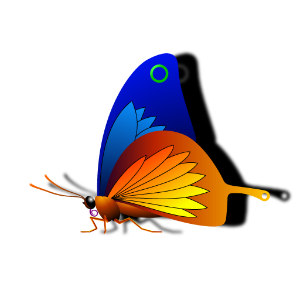
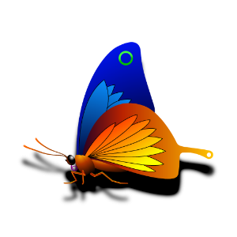
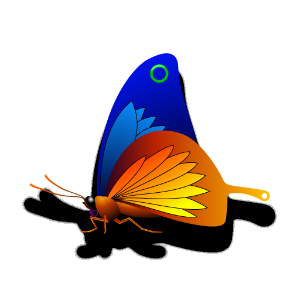

DropShadow QML Type
Generates a soft shadow behind the source item. More...
| Import Statement: | import Qt5Compat.GraphicalEffects |
| Since: | QtGraphicalEffects 1.0 |
| Inherits: |
Properties
- cached : alias
- color : alias
- horizontalOffset : real
- radius : int
- samples : alias
- source : alias
- spread : alias
- transparentBorder : alias
- verticalOffset : real
Detailed Description
The DropShadow effect blurs the alpha channel of the input, colorizes the result and places it behind the source object to create a soft shadow. The shadow's color can be changed using the color property. The location of the shadow can be changed with the horizontalOffset and verticalOffset properties.
| Source | Effect applied |
|---|---|
|  |

The soft shadow is created by blurring the image live using a gaussian blur. Performing blur live is a costly operation. Fullscreen gaussian blur with even a moderate number of samples will only run at 60 fps on highend graphics hardware.
When the source is static, the cached property can be set to allocate another buffer to avoid performing the blur every time it is drawn.
Note: This effect is available when running with OpenGL.
Example
The following example shows how to apply the effect.
import QtQuick import Qt5Compat.GraphicalEffects Item { width: 300 height: 300 Rectangle { anchors.fill: parent } Image { id: butterfly source: "images/butterfly.png" sourceSize: Qt.size(parent.width, parent.height) smooth: true visible: false } DropShadow { anchors.fill: butterfly horizontalOffset: 3 verticalOffset: 3 radius: 8.0 color: "#80000000" source: butterfly } }
Property Documentation
cached : alias |
This property allows the effect output pixels to be cached in order to improve the rendering performance. Every time the source or effect properties are changed, the pixels in the cache must be updated. Memory consumption is increased, because an extra buffer of memory is required for storing the effect output.
It is recommended to disable the cache when the source or the effect properties are animated.
By default, the property is set to false.
color : alias |
This property defines the RGBA color value which is used for the shadow.
By default, the property is set to "black".
| Output examples with different color values | ||
|---|---|---|
 |  |  |
| color: #000000 | color: #0000ff | color: #aa000000 |
| radius: 8 | radius: 8 | radius: 8 |
| samples: 17 | samples: 17 | samples: 17 |
| horizontalOffset: 0 | horizontalOffset: 0 | horizontalOffset: 0 |
| verticalOffset: 20 | verticalOffset: 20 | verticalOffset: 20 |
| spread: 0 | spread: 0 | spread: 0 |
horizontalOffset : real |
HorizontalOffset and verticalOffset properties define the offset for the rendered shadow compared to the DropShadow item position. Often, the DropShadow item is anchored so that it fills the source element. In this case, if the HorizontalOffset and verticalOffset properties are set to 0, the shadow is rendered exactly under the source item. By changing the offset properties, the shadow can be positioned relatively to the source item.
The values range from -inf to inf. By default, the properties are set to 0.
| Output examples with different horizontalOffset values | ||
|---|---|---|
 |
|  |
| horizontalOffset: -20 | horizontalOffset: 0 | horizontalOffset: 20 |
| radius: 4 | radius: 4 | radius: 4 |
| samples: 9 | samples: 9 | samples: 9 |
| color: #000000 | color: #000000 | color: #000000 |
| verticalOffset: 0 | verticalOffset: 0 | verticalOffset: 0 |
| spread: 0 | spread: 0 | spread: 0 |

| Output examples with different verticalOffset values | ||
|---|---|---|
| ||
| horizontalOffset: 0 | horizontalOffset: 0 | |
| radius: 4 | radius: 8 | |
| samples: 9 | samples: 17 | |
| color: #000000 | color: #000000 | |
| verticalOffset: 0 | verticalOffset: 20 | |
| spread: 0 | spread: 0 |
radius : int |
Radius defines the softness of the shadow. A larger radius causes the edges of the shadow to appear more blurry.
The ideal blur is achieved by selecting samples and radius such that samples = 1 + radius * 2, such as:
| Radius | Samples |
|---|---|
| 0 (no blur) | 1 |
| 1 | 3 |
| 2 | 5 |
| 3 | 7 |
By default, the property is set to floor(samples/2).
| Output examples with different radius values | ||
|---|---|---|
| radius: 0 | radius: 6 | radius: 12 |
| samples: 25 | samples: 25 | samples: 25 |
| color: #000000 | color: #000000 | color: #000000 |
| horizontalOffset: 0 | horizontalOffset: 0 | horizontalOffset: 0 |
| verticalOffset: 20 | verticalOffset: 20 | verticalOffset: 20 |
| spread: 0 | spread: 0 | spread: 0 |
samples : alias |
This property defines how many samples are taken per pixel when edge softening blur calculation is done. Larger value produces better quality, but is slower to render.
Ideally, this value should be twice as large as the highest required radius value plus one, such as:
| Radius | Samples |
|---|---|
| 0 (no blur) | 1 |
| 1 | 3 |
| 2 | 5 |
| 3 | 7 |
By default, the property is set to 9.
This property is not intended to be animated. Changing this property will cause the underlying OpenGL shaders to be recompiled.
source : alias |
This property defines the source item that is going to be used as the source for the generated shadow.
Note: It is not supported to let the effect include itself, for instance by setting source to the effect's parent.
spread : alias |
This property defines how large part of the shadow color is strengthened near the source edges.
The value ranges from 0.0 to 1.0. By default, the property is set to 0.0.
| Output examples with different spread values | ||
|---|---|---|
 |  | |
| spread: 0.0 | spread: 0.5 | spread: 1.0 |
| radius: 8 | radius: 8 | radius: 8 |
| samples: 17 | samples: 17 | samples: 17 |
| color: #000000 | color: #000000 | color: #000000 |
| horizontalOffset: 0 | horizontalOffset: 0 | horizontalOffset: 0 |
| verticalOffset: 20 | verticalOffset: 20 | verticalOffset: 20 |
transparentBorder : alias |
This property determines whether or not the effect has a transparent border.
When set to true, the exterior of the item is padded with a 1 pixel wide transparent edge, making sampling outside the source texture use transparency instead of the edge pixels. Without this property, an image which has opaque edges will not get a blurred shadow.
In the image below, the Rectangle on the left has transparent borders and has blurred edges, whereas the Rectangle on the right does not:
By default, this property is set to true.
import QtQuick import Qt5Compat.GraphicalEffects Rectangle { width: 180 height: 100 Row { anchors.centerIn: parent spacing: 16 Rectangle { id: normalRect width: 60 height: 60 radius: 10 color: "steelblue" layer.enabled: true layer.effect: DropShadow { transparentBorder: false horizontalOffset: 8 verticalOffset: 8 } } Rectangle { id: transparentBorderRect width: 60 height: 60 radius: 10 color: "steelblue" layer.enabled: true layer.effect: DropShadow { transparentBorder: true horizontalOffset: 8 verticalOffset: 8 } } } }
verticalOffset : real |
HorizontalOffset and verticalOffset properties define the offset for the rendered shadow compared to the DropShadow item position. Often, the DropShadow item is anchored so that it fills the source element. In this case, if the HorizontalOffset and verticalOffset properties are set to 0, the shadow is rendered exactly under the source item. By changing the offset properties, the shadow can be positioned relatively to the source item.
The values range from -inf to inf. By default, the properties are set to 0.
| Output examples with different horizontalOffset values | ||
|---|---|---|
| ||
| horizontalOffset: -20 | horizontalOffset: 0 | horizontalOffset: 20 |
| radius: 4 | radius: 4 | radius: 4 |
| samples: 9 | samples: 9 | samples: 9 |
| color: #000000 | color: #000000 | color: #000000 |
| verticalOffset: 0 | verticalOffset: 0 | verticalOffset: 0 |
| spread: 0 | spread: 0 | spread: 0 |
| Output examples with different verticalOffset values | ||
|---|---|---|
| ||
| horizontalOffset: 0 | horizontalOffset: 0 | |
| radius: 4 | radius: 8 | |
| samples: 9 | samples: 17 | |
| color: #000000 | color: #000000 | |
| verticalOffset: 0 | verticalOffset: 20 | |
| spread: 0 | spread: 0 |